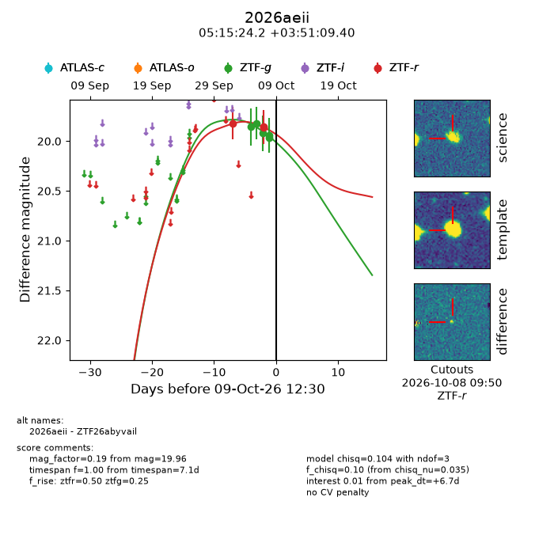
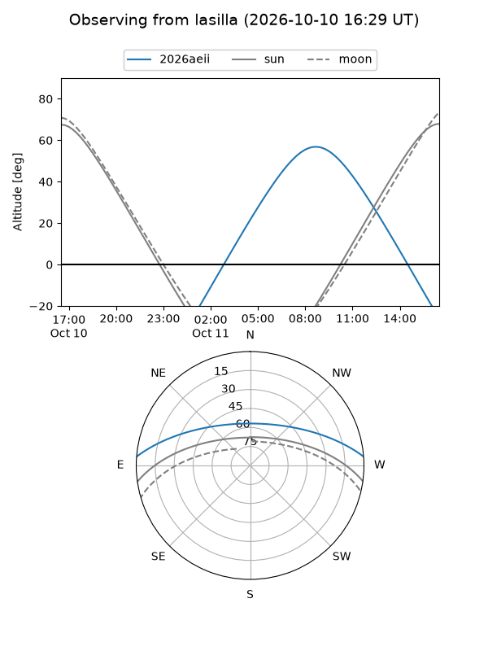
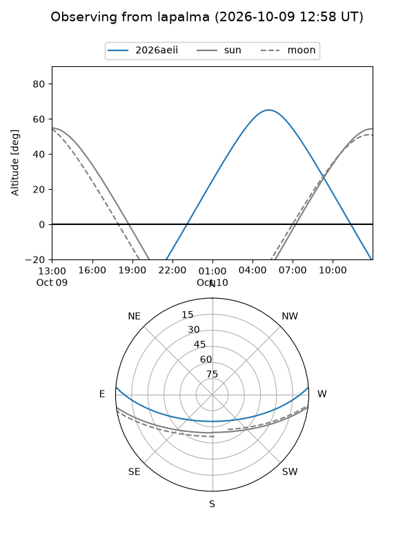
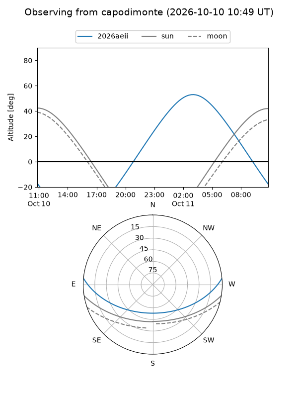
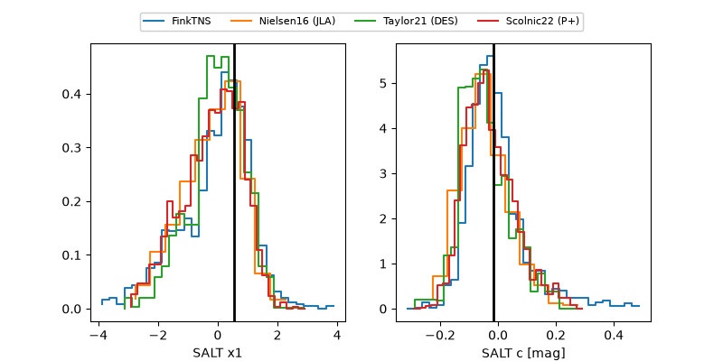

2026aeii
Target 2026aeii at 2026-10-09 12:32
Aliases and brokers:
FINK-ZTF: ztf.fink-portal.org/ZTF26abyvail
Lasair-ZTF: lasair-ztf.lsst.ac.uk/objects/ZTF26abyvail
ALeRCE-ZTF: alerce.online/object/ZTF26abyvail
YSE-PZ: ziggy.ucolick.org/yse/transient_detail/2026aeii
TNS name: wis-tns.org/object/2026aeii
Direct TNS query: direct search
alt names
ZTF26abyvail (ztf,fink_ztf)
2026aeii (tns,yse)
Coordinates:
equatorial (ra, dec) = 78.8509,+3.85261
equatorial (HMS+DMS) = 05:15:24.21,+03:51:09.40
galactic (l, b) = (197.8913,-19.30865)
Flags:
peak dt: +6.7
Photometry:
last ztfg=19.96, ztfr=19.85
5 ztfg, 3 ztfr detections
Lightcurve

Visibility



Additional plots
